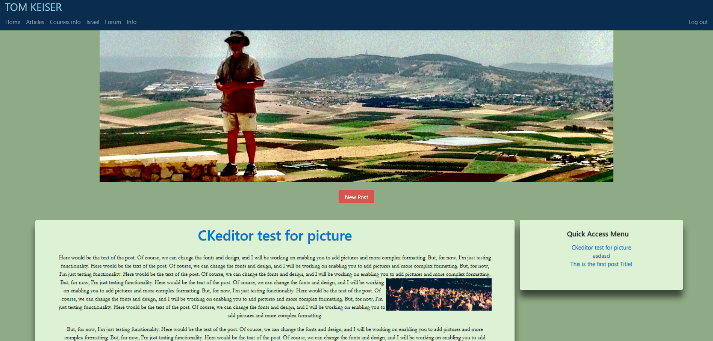
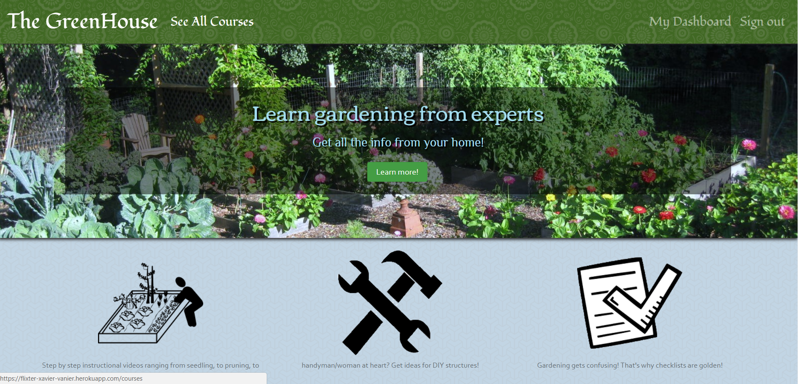

Xavier Vanier
SOFTWARE ENGINEER
Xavier Vanier started learning Python by himself two years ago, enjoying solving coding challenges.
Over the last year, he has focused his efforts on Ruby on Rails developpement and applying his skills learned at The Firehose Project bootcamp. His repositories can be visited on Github.
Web Apps
Agile Team Project
Worked on an Agile software development team building
a chess application. Under the guidance of a senior software engineer,
we had weekly Agile team meetings for code reviews, sprint planning,
and feature assignments. The team's project can be found at
MeetingTime404.
I decided to continue the project after the bootcamp ended and the fork
can be found on Github.

Personal Professional Blog
Personal Professor's website, featuring blog posts
integrated with CKEditor allowing comments and creation
of multimedia lessons.
Under development

Firehose Project Apps
Single Page Todo Application
This single-page to-do application features a
fluid user interface that– by using JavaScript–
allows users to rapidly add dynamic content.

Test Driven Development
An Instagram clone that was built using industry-standard, test-driven
development following numerous red/green/refactor cycles.

Two-Sided Market Place
A two-sided, video-streaming marketplace platform that
features credit card payment capabilities, user role
management, complex user interfaces, and advanced
database relationships.

Yelp Clone
A Yelp clone that integrates with the Google Maps API
and includes features like user comments, star ratings,
image uploading, and user authentication.

Code Snippets
Binary Tree Sort
This ruby program will sort an array using a binary tree data structure.
class BinaryTree
attr_accessor :payload, :left, :right
def initialize(payload, left=nil, right=nil)
@payload = payload
@left = left
@right = right
end
def insert(new_payload)
if new_payload < @payload
@left.nil? ? @left = BinaryTree.new(new_payload) : @left.insert(new_payload)
elsif new_payload > @payload
@right.nil? ? @right = BinaryTree.new(new_payload) : @right.insert(new_payload)
end
end
end
module BTreeSort
def self.sort(array)
tree = BinaryTree.new(array.pop)
while not array.empty?
tree.insert(array.pop)
end
new_aray = []
order(tree) do |node|
new_aray << node.payload
end
return new_aray
end
def self.order(node, &block)
return if node.nil?
order(node.left, &block)
yield node
order(node.right, &block)
end
end
module Luhn
def self.is_valid?(number)
digits = number.to_s.chars.map(&:to_i).reverse
return digits
.map.with_index {|n, i| i.odd? ? n*2 : n}
.map {|n| n >= 10 ? n -= 9 : n}
.inject(0, :+) % 10 == 0
end
end
Luhn Algorithm
This ruby program verifies that a credit card number is valid
following the Luhn Algorithm.
Reverse Linked Lists
This ruby program reverses a linked list either recursively
or using a stack data structure.
class LinkedListNode
attr_accessor :value, :next_node
def initialize(value, next_node=nil)
@value = value
@next_node = next_node
end
end
def print_values(list_node)
if list_node
print "#{list_node.value} --> "
print_values(list_node.next_node)
else
print "nil\n"
return
end
end
def reverse_list(list, previous=nil)
unless list.nil?
temp_next_node = list.next_node
list.next_node = previous
return reverse_list(temp_next_node, list)
else
return previous
end
end
node1 = LinkedListNode.new(37)
node2 = LinkedListNode.new(99, node1)
node3 = LinkedListNode.new(12, node2)
revlist = reverse_list(node3)
print_values(revlist)
# Using a stack
class Stack
attr_accessor :data
def initialize
@data = nil
end
# Push a value onto the stack
def push(value)
@data = LinkedListNode.new(value, @data)
end
def pop
value = @data.value
@data = @data.next_node
return value
end
end
stack = Stack.new
stack.push(37)
stack.push(99)
stack.push(12)
def reverse_stack(stack)
new_stack = Stack.new
while stack.data != nil
new_stack.push(stack.pop)
end
return new_stack
end
print_values(stack.data)
revstack = reverse_stack(stack)
print_values(revstack.data)
Xavier has developed proficiency and expertise
in the following programming languages and
comfort with the following tools.